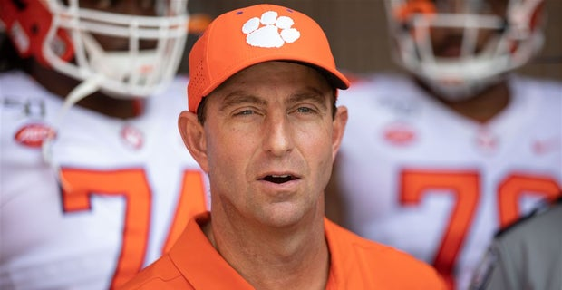

Dabo Swimney
By Manning Snyder / Jan 7, 2021

Dabo Swinney’s mouth wrote checks his team couldn’t cash.
The typically spirited Clemson football coach is rarely at a loss for words. He speaks his mind and often defends his comments. Before Clemson’s New Year’s Day playoff matchup against Ohio State, Swinney once again made national headlines for listing Ohio State at number 11 on his final AP Coaches Poll. Despite the Buckeyes’ being undefeated and Big Ten champions, Swinney said that he didn’t rank any team in his top-10 that played less than nine games.
Then those very Buckeyes destroyed Clemson. And it wasn’t even close. His Tigers were dominated in the Sugar Bowl by Ohio State last week--a 49-28 loss to Swinney’s number-11-ranked team in the country. Clemson fans should hope and pray that Swinney talks less. It’s early 2021. Call it a resolution.
Clemson has become a college football powerhouse, making the playoff nearly every year and winning the ACC each of the last six years. The success speaks for itself and one would be a fool to say that Clemson is not among the best programs in the country. Tiger fans are now accustomed to winning and the school is thriving (through season ticket sales and fundraising) because of it.
Yet Swinney’s constant trash talking and unapologetic confidence makes their losses even sweeter to college football fans. Yes, Swinney is responsible for much of Clemson’s success in recent years. But through Swinney’s “the best is the standard” motto, he is also responsible for portraying Clemson’s image as a “holier than thou” football program. And amidst a global pandemic, Swinney’s comments and AP rankings were coined “bulletin board material” for an Ohio State program that couldn’t control the amount of games they played because of COVID-19.
Less talk. More wins.
Mr. Swinney, the success will speak for itself.